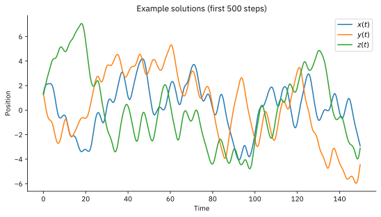
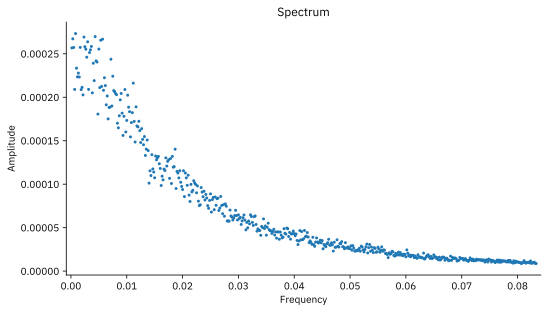
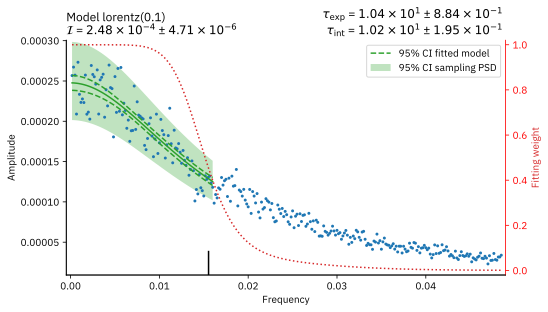
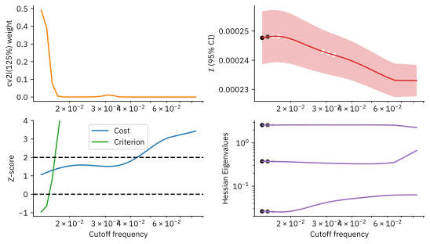

Applicability of the Lorentz Model¶
STACIE’s Lorentz model assumes that the autocorrelation function decays exponentially for large lag times. Not all dynamical systems exhibit this exponential relaxation. If you want to apply STACIE to systems without exponential relaxation, you can use the exppoly model instead.
To illustrate the applicability of the Lorentz model, this notebook applies STACIE to numerical solutions of Thomas’ Cyclically Symmetric Attractor:
For \(b<0.208186\), this system has chaotic solutions. As a result, the system looses memory of its initial conditions rather quickly, and the autocorrelation function tends to decay exponentially. At the boundary, \(b=0.208186\), the exponential decay is no longer valid and the spectrum deviates from the Lorentzian shape. In practice, the Lorentz model is applicable for smaller values, \(0 < b < 0.17\).
For \(b=0\), the solutions become random walks with anomalous diffusion [RS08]. In this case, it makes more sense to work with the spectrum of the time derivative of the solutions. However, due to the anomalous diffusion, the spectrum of these derivatives cannot be approximated well with the Lorentz model.
This example is fully self-contained: input data is generated with numerical integration and then analyzed with STACIE. Dimensionless units are used throughout.
We suggest you experiment with this notebook by changing the \(b\) parameter and replacing the Lorentz model with the ExpPoly model.
Library Imports and Matplotlib Configuration¶
import matplotlib as mpl
import matplotlib.pyplot as plt
import numpy as np
from numpy.typing import ArrayLike, NDArray
from stacie import (
UnitConfig,
compute_spectrum,
estimate_acint,
LorentzModel,
plot_extras,
plot_fitted_spectrum,
plot_spectrum,
)
mpl.rc_file("matplotlibrc")
%config InlineBackend.figure_formats = ["svg"]
Data Generation¶
The following cell implements the numerical integration of the oscillator
using Ralston’s method
for 100 different initial configurations.
The parameter \(b\) is given as an argument to the generate() function
at the last line of the next cell.
NSYS = 100
NDIM = 3
NSTEP = 20000
TIMESTEP = 0.3
def time_derivatives(state: ArrayLike, b: float) -> NDArray:
"""Compute the time derivatives defining the differential equations."""
return np.sin(np.roll(state, 1, axis=1)) - b * state
def integrate(state: ArrayLike, nstep: int, h: float, b: float) -> NDArray:
"""Integrate the System with Ralston's method, using a fixed time step h.
Parameters
----------
state
The initial state of the system, shape `(ndim, nsys)`,
where `ndim` is the number of dimensions and `nsys` systems to integrate in parallel.
nstep
The number of time steps to integrate.
h
The time step size.
b
The parameter $b$ in the differential equations.
Returns
-------
trajectory
The trajectory of the system, shape `(nstep, ndim, nsys)`.
The first dimension is the time step, the second dimension is the state variable,
and the third dimension is the system index.
"""
trajectory = np.zeros((nstep, *state.shape))
for istep in range(nstep):
k1 = time_derivatives(state, b)
k2 = time_derivatives(state + (2 * h / 3) * k1, b)
state += h * (k1 + 3 * k2) / 4
trajectory[istep] = state
return trajectory
def generate(b: float):
"""Generate solutions for random initial states."""
rng = np.random.default_rng(42)
x = rng.uniform(-2, 2, (NDIM, NSYS))
return integrate(x, NSTEP, TIMESTEP, b)
trajectory = generate(b=0.1)
The solutions shown below are smooth, but for low enough values of \(b\), they are pseudo-random over longer time scales.
def plot_traj(nplot=500):
"""Show the first 500 steps of the first 10 solutions."""
plt.close("traj")
_, ax = plt.subplots(num="traj")
times = np.arange(nplot) * TIMESTEP
ax.plot(times, trajectory[:nplot, 0, 0], label="$x(t)$")
ax.plot(times, trajectory[:nplot, 1, 0], label="$y(t)$")
ax.plot(times, trajectory[:nplot, 2, 0], label="$z(t)$")
ax.set_xlabel("Time")
ax.set_ylabel("Position")
ax.set_title(f"Example solutions (first {nplot} steps)")
ax.legend()
plot_traj()

Spectrum¶
In the chaotic regime, the low-frequency spectrum indicates diffusive motion: a large peak at the origin. The spectrum is normalized so that the autocorrelation integral becomes the variance of the mean.
uc = UnitConfig(acint_fmt=".2e")
sequences = trajectory[:, 0, :].T # use x(t) only
spectrum = compute_spectrum(
sequences,
timestep=TIMESTEP,
prefactors=2.0 / (NSTEP * TIMESTEP * NSYS),
include_zero_freq=False,
)
plt.close("spectrum")
_, ax = plt.subplots(num="spectrum")
plot_spectrum(ax, uc, spectrum, nplot=500)

Note that we only use component 0, i.e. \(x(t)\), of each system as input for the spectra. This ensures that fully independent sequences are used in the analysis below, which is assumed by the statistical model of the spectrum used by STACIE.
Error of the Mean¶
The following cells fit the Lorentz model to the spectrum to derive the variance of the mean.
result = estimate_acint(spectrum, LorentzModel(), verbose=True)
CUTOFF FREQUENCY SCAN cv2l(125%)
neff criterion fcut
--------- ---------- ----------
15.0 inf 2.52e-03 (Variance of the correlation time estimate is too large.)
16.0 inf 2.68e-03 (Variance of the correlation time estimate is too large.)
17.1 inf 2.85e-03 (Variance of the correlation time estimate is too large.)
18.2 inf 3.04e-03 (Variance of the correlation time estimate is too large.)
19.4 inf 3.23e-03 (opt: Hessian matrix has non-positive eigenvalues: evals=array([-2.13212330e-04, 4.27724835e-01, 2.57248838e+00]))
20.7 inf 3.44e-03 (opt: Hessian matrix has non-positive eigenvalues: evals=array([-3.42858708e-04, 4.26401259e-01, 2.57394160e+00]))
22.0 inf 3.66e-03 (opt: Hessian matrix has non-positive eigenvalues: evals=array([-6.28787951e-04, 4.25285484e-01, 2.57534330e+00]))
23.5 inf 3.90e-03 (opt: Hessian matrix has non-positive eigenvalues: evals=array([-7.74018437e-04, 4.23479196e-01, 2.57729482e+00]))
25.0 inf 4.15e-03 (opt: Hessian matrix has non-positive eigenvalues: evals=array([-9.36617560e-04, 4.22060298e-01, 2.57887632e+00]))
26.7 inf 4.42e-03 (opt: Hessian matrix has non-positive eigenvalues: evals=array([-6.89294195e-04, 4.19968631e-01, 2.58072066e+00]))
28.4 inf 4.70e-03 (opt: Hessian matrix has non-positive eigenvalues: evals=array([-8.22895236e-05, 4.18498803e-01, 2.58158349e+00]))
30.3 inf 5.01e-03 (Variance of the correlation time estimate is too large.)
32.3 inf 5.33e-03 (Variance of the correlation time estimate is too large.)
34.4 inf 5.67e-03 (Variance of the correlation time estimate is too large.)
36.7 inf 6.04e-03 (Variance of the correlation time estimate is too large.)
39.1 inf 6.43e-03 (Variance of the correlation time estimate is too large.)
41.6 inf 6.84e-03 (Variance of the correlation time estimate is too large.)
44.3 inf 7.28e-03 (Variance of the correlation time estimate is too large.)
47.2 inf 7.75e-03 (Variance of the correlation time estimate is too large.)
50.3 inf 8.25e-03 (Variance of the correlation time estimate is too large.)
53.6 inf 8.79e-03 (Variance of the correlation time estimate is too large.)
57.1 inf 9.35e-03 (Variance of the correlation time estimate is too large.)
60.8 inf 9.96e-03 (Variance of the correlation time estimate is too large.)
64.7 inf 1.06e-02 (Variance of the correlation time estimate is too large.)
68.9 inf 1.13e-02 (Variance of the correlation time estimate is too large.)
73.4 inf 1.20e-02 (Variance of the correlation time estimate is too large.)
78.2 inf 1.28e-02 (Variance of the correlation time estimate is too large.)
83.3 inf 1.36e-02 (Variance of the correlation time estimate is too large.)
88.7 -6.7 1.45e-02
94.4 -6.4 1.54e-02
100.5 -4.8 1.64e-02
107.1 -2.1 1.75e-02
114.0 0.4 1.86e-02
121.4 1.7 1.98e-02
129.2 1.4 2.11e-02
137.6 0.5 2.24e-02
146.5 -0.1 2.39e-02
156.0 -0.5 2.54e-02
166.1 -1.1 2.71e-02
176.8 -2.1 2.88e-02
188.3 -2.9 3.07e-02
200.4 -2.7 3.26e-02
213.4 -1.1 3.48e-02
227.2 1.6 3.70e-02
241.9 4.9 3.94e-02
257.5 7.7 4.19e-02
274.2 9.3 4.46e-02
291.9 9.4 4.75e-02
310.7 8.7 5.06e-02
330.8 7.8 5.38e-02
352.2 7.0 5.73e-02
374.9 5.6 6.10e-02
399.1 2.8 6.49e-02
424.9 inf 6.91e-02 (cv2l: Linear dependencies in basis. evals=array([1.83362182e-07, 2.82393010e-01, 2.71760681e+00]))
452.3 inf 7.36e-02 (cv2l: Linear dependencies in basis. evals=array([9.49923181e-07, 2.36034488e-01, 2.76396456e+00]))
481.5 inf 7.83e-02 (cv2l: Linear dependencies in basis. evals=array([1.47629017e-07, 1.81704351e-01, 2.81829550e+00]))
512.6 139.5 8.34e-02
Cutoff criterion exceeds incumbent + margin: -6.7 + 100.0.
INPUT TIME SERIES
Time step: 3.00e-01
Simulation time: 6.00e+03
Maximum degrees of freedom: 200.0
MAIN RESULTS
Autocorrelation integral: 2.48e-04 ± 4.71e-06
Integrated correlation time: 1.02e+01 ± 1.95e-01
SANITY CHECKS (weighted averages over cutoff grid)
Effective number of points: 95.1 (ideally > 60)
Regression cost Z-score: 1.1 (ideally < 2)
Cutoff criterion Z-score: -0.5 (ideally < 2)
MODEL lorentz(0.1) | CUTOFF CRITERION cv2l(125%)
Number of parameters: 3
Average cutoff frequency: 1.55e-02
Exponential correlation time: 1.04e+01 ± 8.84e-01
RECOMMENDED SIMULATION SETTINGS (EXPONENTIAL CORR. TIME)
Block time: 3.27e+00 ± 4.95e-01
Simulation time: 6.54e+02 ± 7.01e+00
Due to the symmetry of the oscillator, the mean of the solutions should be zero. Within the uncertainty, this is indeed the case for the numerical solutions, as shown below.
mean = sequences.mean()
print(f"Mean: {mean:.3e}")
error_mean = np.sqrt(result.acint)
print(f"Error of the mean: {error_mean:.3e}")
Mean: 1.303e-02
Error of the mean: 1.574e-02
For sufficiently small values of \(b\), the autocorrelation function decays exponentially, so that the two autocorrelation times are very similar:
print(f"corrtime_exp = {result.corrtime_exp:.3f} ± {result.corrtime_exp_std:.3f}")
print(f"corrtime_int = {result.corrtime_int:.3f} ± {result.corrtime_int_std:.3f}")
corrtime_exp = 10.408 ± 0.884
corrtime_int = 10.234 ± 0.195
To further gauge the applicability of the Lorentz model, it is useful to plot the fitted spectrum and the intermediate results as a function of the cutoff frequency, as shown below.
plt.close("fitted")
fig, ax = plt.subplots(num="fitted")
plot_fitted_spectrum(ax, uc, result)
plt.close("extras")
fig, axs = plt.subplots(2, 2, num="extras")
plot_extras(axs, uc, result)


It is clear that at higher cutoff frequencies, which are given a negligible weight, the spectrum deviates from the Lorentzian shape. Hence, at shorter time scales, the autocorrelation function does not decay exponentially. This was to be expected, as the input sequences are smooth functions. To further confirm this, we recommend rerunning this notebook with different values of \(b\):
For lower value, such as \(b=0.05\), the Lorentz model will fit the spectrum better, which is reflected in lower Z-score values.
Up to \(b=0.17\), the Lorentz model is still applicable, but the Z-scores will increase.
For \(b=0.2\), the Lorentz model will not be able to assign an exponential correlation time. To be able to run the notebook until the last plot, you need to comment out the line that prints the exponential correlation time.
Regression Tests¶
If you are experimenting with this notebook, you can ignore any exceptions below. The tests are only meant to pass for the notebook in its original form.
if abs(result.acint - 2.47e-4) > 2e-5:
raise ValueError(f"Wrong acint: {result.acint:.4e}")
if abs(result.corrtime_exp - 10.408) > 1e-1:
raise ValueError(f"Wrong corrtime_exp: {result.corrtime_exp:.4e}")